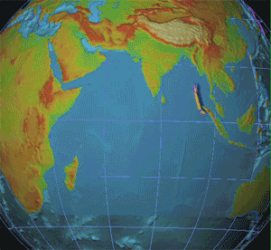

Un maremoto arrasa las costas de Asia: el mar se tragó pueblos enteros en una docena de países
Un terremoto colosal frente a Sumatra, el más potente en cuarenta años, levantó olas que cruzaron el océano entero y barrieron playas de Indonesia, Tailandia, Sri Lanka y la India. Los muertos ya se cuentan por decenas de miles y nadie se atreve a dar la cifra final.

A las ocho de la mañana, hora de Sumatra, el fondo del mar se quebró frente a la provincia de Aceh con una violencia que los sismógrafos apenas supieron medir: magnitud cercana a 9,1, el tercer terremoto más potente jamás registrado. El mar hizo entonces lo que hace desde antes de que hubiera quien lo escriba: primero se retiró de las playas, dejando a la vista peces y arena donde nunca se veía el fondo —y atrayendo, trampa atroz, a los curiosos—, y minutos después volvió convertido en una muralla de agua que entró tierra adentro arrasando cuanto encontró.
La ola no se conformó con Indonesia, donde ciudades enteras de Aceh han quedado borradas. Viajó a la velocidad de un avión por el océano abierto y fue golpeando, hora tras hora, las costas de Tailandia repletas de turistas por las fiestas, el sur de la India, las Maldivas, y esta isla de Sri Lanka, donde arrancó de las vías un tren de pasajeros lleno. En la mayoría de esos lugares nadie recibió el menor aviso: el Índico, a diferencia del Pacífico, no cuenta con un sistema de alerta de maremotos, y entre el terremoto y la ola hubo horas que habrían alcanzado para vaciar todas las playas.
La geología del desastre impone humildad: frente a Sumatra, la placa del océano Índico se hunde desde siempre bajo la de Birmania, y ayer soltó de golpe siglos de tensión acumulada a lo largo de más de mil kilómetros de falla —la distancia de Buenos Aires a Tucumán—, levantando varios metros el fondo marino con billones de toneladas de agua encima. El planeta entero lo sintió: los sismógrafos de todos los continentes saltaron a la vez, y los físicos aseguran que la Tierra quedó vibrando como una campana golpeada. En Hawái, el centro de alertas del Pacífico midió la magnitud y buscó desesperadamente a quién avisar: no existía siquiera una lista de teléfonos de emergencia de los países del Índico. La burocracia, esta vez, mató como el agua.
Entre el horror asoman historias que el mundo va a querer conservar. En una playa de Tailandia, una escolar inglesa de diez años reconoció las señales que le habían enseñado en la clase de geografía dos semanas atrás —el mar que se retira, la espuma que hierve en el horizonte— y su alarma vació la playa entera: allí no murió nadie. En la isla de Simeulue, pegada al epicentro, los ancianos gritaron una palabra vieja, «smong», que la tradición oral guarda desde el maremoto de 1907 junto con su receta completa: si el mar se va, hay que correr al monte; se salvaron casi todos. Y en el mar abierto, donde la ola pasa como una loma mansa, cientos de pescadores navegaron sobre la muerte sin advertirla, y volvieron al atardecer a puertos que ya no estaban.
Al cierre de esta edición los muertos confirmados superan las decenas de miles y cada parte los multiplica; los desaparecidos no tienen número y el agua contaminada amenaza con cobrarse a los sobrevivientes lo que la ola perdonó. El mundo, que celebraba la Navidad, organiza a las apuradas la mayor operación de socorro de la que haya memoria. Cuando las aguas bajen habrá que preguntarse, con la dureza que la pregunta merece, cuántas de estas vidas costó no un capricho de la Tierra, sino la falta de una sirena.